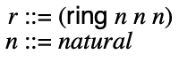
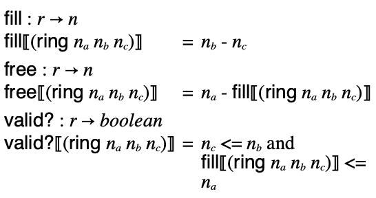
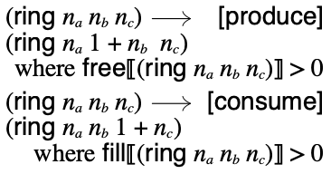

Ring Buffer Semantics
This note typesets the executable Redex model in ring.rkt. A ring state is written as (ring capacity produced consumed). The cursors are monotonic; occupancy is derived by subtracting the consumed cursor from the produced cursor.
State language. The model keeps the ring state deliberately small: capacity, producer cursor, and consumer cursor.

Derived quantities and invariant. The fill and free metafunctions compute occupancy and available capacity; valid? states 0 <= fill <= capacity.

Transitions. Producing advances the producer cursor when free space remains. Consuming advances the consumer cursor when the ring is non-empty.

Executable check. The model test runs redex-check for 5000 attempts, searching for a one-step counterexample to validity preservation.